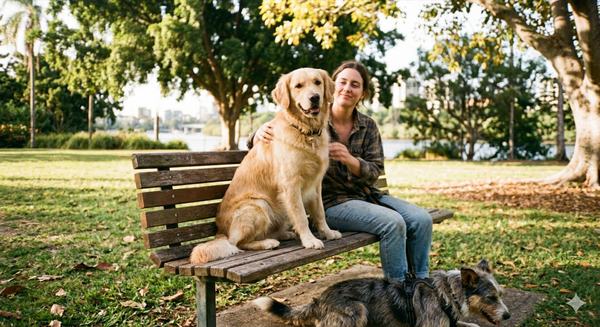
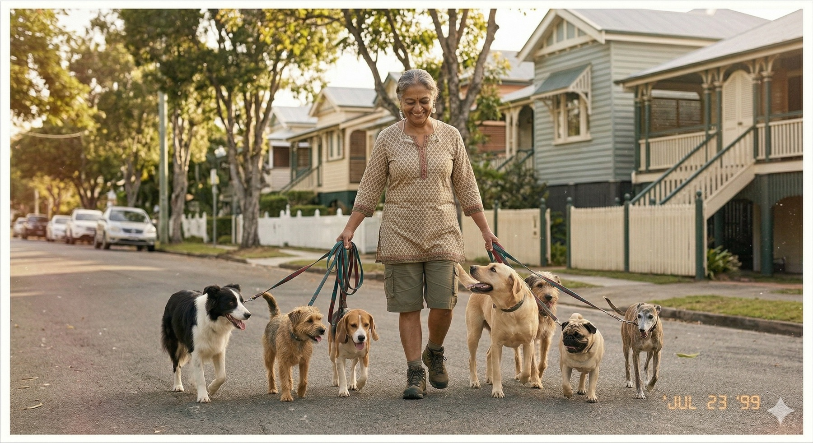
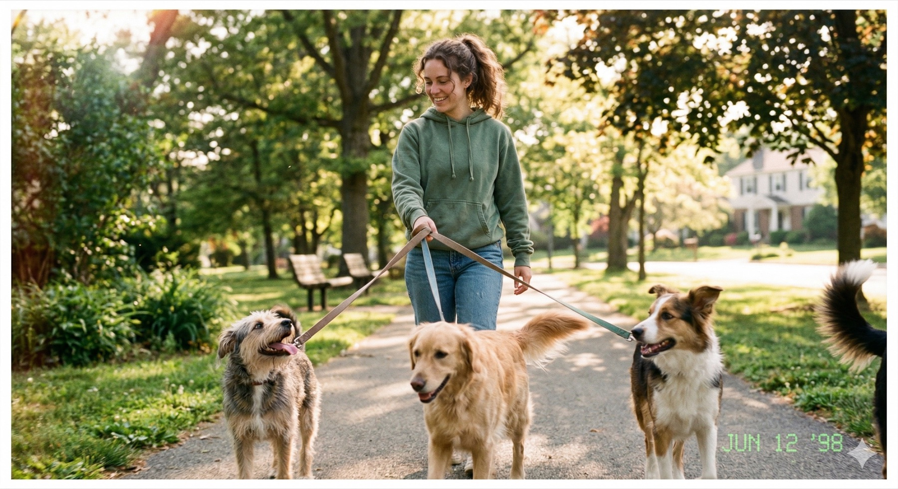
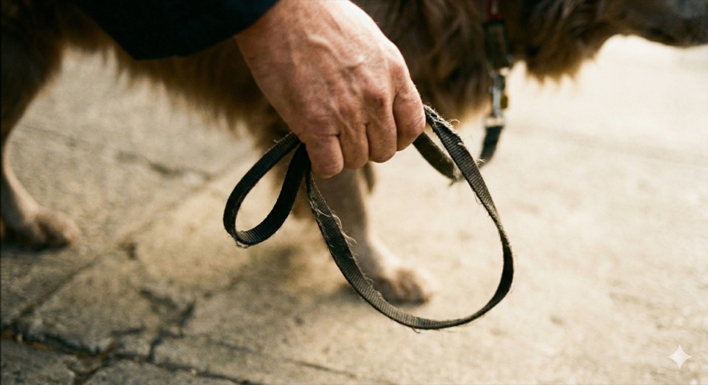
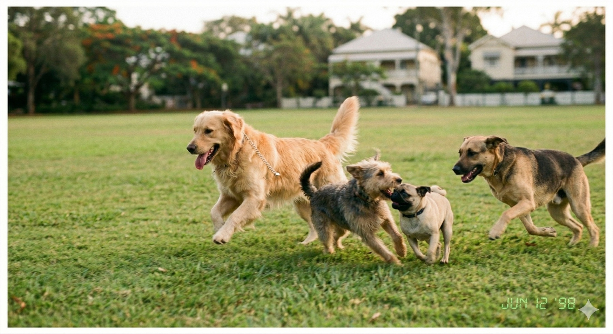
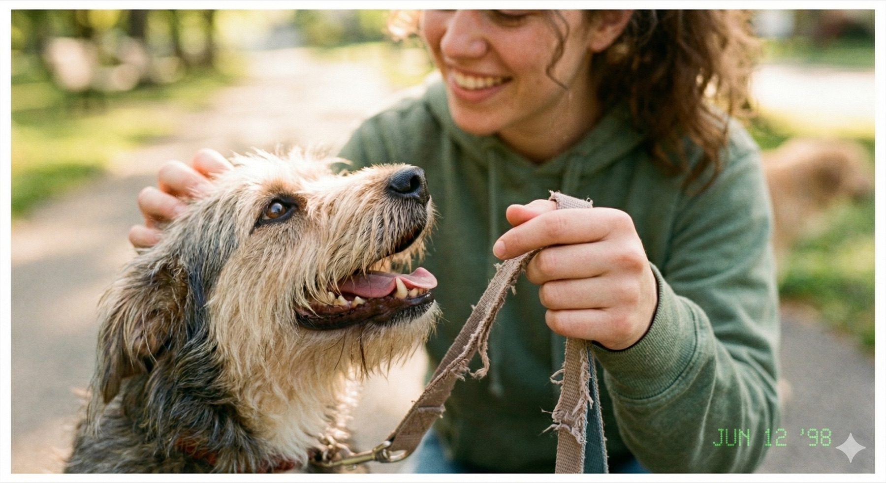
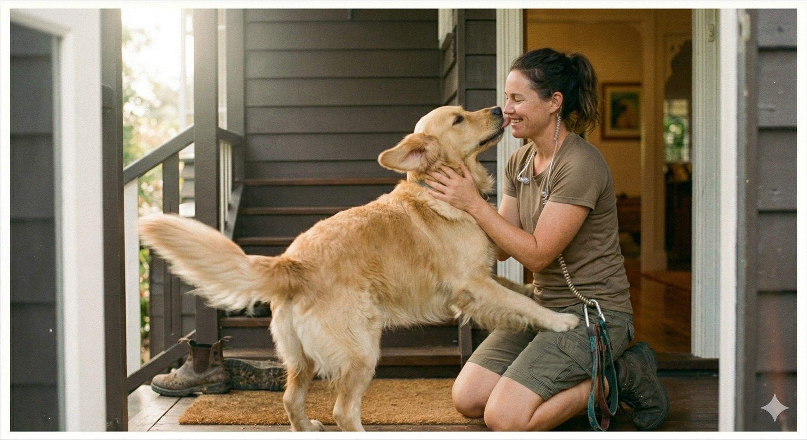
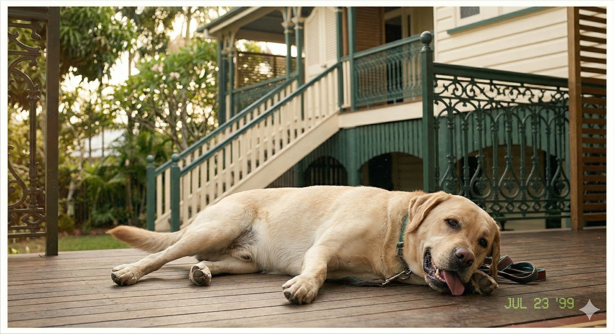

Prepared by Nunya Bunya
Brand Book
Everything Pawesome needs to launch, sell, communicate, and scale with one consistent brand system.
What is inside
A complete operating system for the brand.
This sample shows how the Brand Book combines strategy, style, marketing, website direction, templates, and operating systems into one practical document.
"The point is not to make a pretty document. The point is to make every decision after this easier."
Nunya Bunya Brand Book principleSection 01
How to Use This Brand Book
This document is the command center for Pawesome. Use it before writing copy, designing assets, posting online, setting prices, hiring walkers, or changing the website.
For strategy
Use the Business Plan pages to decide what to sell, who to prioritize, what makes Pawesome different, and which growth moves matter first.
For marketing
Use the customer, content, SEO, and campaign pages to turn the business plan into specific posts, ads, emails, and local outreach.
For design
Use the Style Guide before creating any graphic, sign, social profile, printed card, PDF, or website page.
For operations
Use the booking, CRM, notification, and handoff pages to keep every new lead and client from falling through the cracks.
The core rule
Every piece of the brand should make Brisbane dog owners feel three things: their dog will be safe, their guilt will be relieved, and Jake will care enough to notice the little things.
Section 02
Business Plan Snapshot
Pawesome Dog Walkers is the trusted local alternative to impersonal pet care apps for Brisbane professionals who feel guilty leaving their dogs alone all day.
dogs walked daily in the current operating rhythm.
core offer range across group walks, solo walks, and adventure hikes.
three-year monthly revenue target with 3-4 trained walkers.
Strategic summary
Pawesome was born from Jake's own guilt about leaving his dog home alone during long office days. That origin story gives the business an emotional honesty that marketplace apps cannot copy.
The immediate opportunity is to fill the remaining daily capacity, package recurring weekly walks, and convert current goodwill into a structured referral engine.
The long-term opportunity is to build a recognizable Brisbane Northside brand with trained walkers, repeatable client communication, and a service standard that still feels personal.

Positioning
What Pawesome Stands For
"Happy dogs. Guilt-free owners."
Primary taglineMission
Give busy Brisbane dog owners peace of mind by turning lonely workdays into safe, joyful, well-communicated adventures.
Vision
Become Brisbane Northside's most trusted small-group dog walking service without losing the personal care that made customers refer their friends.
Promise
Your dog will be known by name, matched carefully, photographed daily, and cared for by someone who notices their quirks.
Proof
Daily photo reports, small groups, meet-and-greets, consistent walkers, first aid training, and local route knowledge.
The market gap
Apps offer convenience, but they often rotate walkers. Friends are free, but unreliable. Daycare is thorough, but expensive and inconvenient. Pawesome wins by combining personal trust, professional reliability, and regular communication.
Revenue model
Offers and Pricing
| Offer | Price | Best For | Strategic Role |
|---|---|---|---|
| Group Walk | $25 per dog | Social dogs needing regular exercise. | Flagship revenue driver. Four dogs at once creates $100 hourly potential. |
| Solo Walk | $35 | Reactive, senior, anxious, or high-attention dogs. | Premium trust builder and upsell from inquiry calls. |
| Puppy Visit | $30 | New puppy owners who need short visits and routine support. | Early relationship builder with strong lifetime value. |
| Weekend Adventure Hike | $55 | High-energy dogs and owners who want bigger weekend stimulation. | Premium content engine and margin booster. |
| Holiday Pet Sitting | $70 per day | Existing clients travelling for work or holidays. | Trust-based add-on that increases annual client value. |
What to lead with
Lead with the Group Walk because it is clear, visual, emotionally desirable, and operationally efficient. Use Solo Walks and Puppy Visits as trust-sensitive alternatives when group walking is not the right fit.
Package idea
Create a weekday recurring package at $110 per week for Monday-Friday group walks. It makes the decision simple, increases predictable revenue, and anchors the brand around routine care.
Growth plan
90-Day Go-to-Market Roadmap
Weeks 1-4
Foundation
- Launch polished website and booking flow.
- Complete Google Business Profile.
- Ask current clients for reviews and referrals.
- Start email list and monthly client updates.
Weeks 5-8
Growth
- Launch recurring weekday package.
- Post daily walk photos and client dog features.
- Partner with cafes, groomers, vets, and pet stores.
- Promote adventure hikes as a premium add-on.
Weeks 9-12
Scale
- Document client communication standards.
- Build walker training checklist.
- Test adjacent suburb campaigns.
- Review CRM, booking, and capacity data weekly.

Section 03
Style Guide
The visual system should feel warm, local, trustworthy, energetic, and just polished enough to reassure premium pet owners without looking corporate.
#2e6b4f
Trust Green
#17382b
Deep Park
#f4a742
Treat Gold
#fdf8f0
Warm Cream
#1a1a1a
Lead Ink
Heading type
Fredoka
Rounded, friendly, and confident. Use for headlines, service names, signage, and social graphics.
Body type
Nunito
Clear and approachable. Use for website copy, email, PDFs, service descriptions, and client instructions.
Design rule
Every asset should look like it belongs to a caring local professional, not a national franchise and not a hobby side gig.
Imagery
Photo Direction
Images should show real joy, safe handling, local Brisbane environments, and the relief owners are buying.




Use
- Dogs in motion, not posed like stock photos.
- Hands, leashes, bags, grass, morning light.
- Small groups where every dog looks comfortable.
- Owner/Jake moments that show trust and care.
Avoid
- Corporate clinic-style pet imagery.
- Chaotic packs that make group walks feel unsafe.
- Overly polished images that feel disconnected from Brisbane.
- Generic smiling-dog photos with no service context.
Messaging
Voice and Copy Rules
Voice traits
- Warm, specific, reassuring.
- Confident without sounding slick.
- Practical about safety and routines.
- Emotionally fluent about owner guilt.
Words to own
Messaging pillars
| Pillar | Meaning | Use It For |
|---|---|---|
| Relief | Owners stop worrying about their dog being lonely all day. | Hero copy, ads, inquiry follow-up. |
| Trust | Dogs are matched carefully, handled safely, and known personally. | Service pages, booking page, objections. |
| Joy | The dog gets a better day, not just a bathroom break. | Social posts, photography, testimonials. |
| Consistency | Regular walks, regular reports, regular care. | Packages, retention emails, CRM notes. |
Section 04
Ideal Customers
Primary persona
Sarah, the guilty professional
28-34, inner Brisbane, $85k-$110k income, apartment or townhouse, one young dog, busy office schedule, high emotional attachment.
- Searches "dog walker near me" after a guilt trigger.
- Needs trust, safety, photo proof, and consistency.
- Will pay more if she believes her dog is genuinely happier.
Secondary persona
Marcus, the practical owner
35-45, works long days, cares deeply but does not want a fussy service. He wants proof the dog is exercised, safe, and tired.
- Responds to clear packages and simple booking.
- Needs reliability more than emotional language.
- Will refer friends if the service becomes invisible and easy.
What triggers a booking
- The dog destroys furniture, barks all day, or seems depressed.
- The owner starts a new role with longer hours.
- A friend or colleague recommends a specific walker.
- The owner sees daily walk photos and imagines their dog in them.
What they need to believe
They need to believe Jake will treat their dog like an individual, not a slot on a schedule.
Customer journey
From Guilt to Referral
| Stage | Customer Thought | Pawesome Response | Asset Needed |
|---|---|---|---|
| Problem | "My dog is miserable while I work." | Name the guilt directly and kindly. | Hero copy, search ad, GBP post. |
| Research | "Can I trust this person?" | Show Jake, safety, photos, reviews, and small groups. | About page, service page, FAQ. |
| Inquiry | "Will this work for my dog?" | Offer meet-and-greet and match the right service. | Booking form, consultation script. |
| First Walk | "How did my dog go?" | Send photo report with specific dog details. | Photo report template. |
| Repeat | "This makes my week easier." | Offer recurring weekday package. | Email sequence, CRM reminder. |
| Referral | "My friend needs this too." | Give referral credit and simple share link. | Referral card, email, social graphic. |

Sales enablement
Objections and Answers
Can I trust a stranger?
Start with a meet-and-greet, explain the daily photo report, and show that Jake learns each dog's quirks before committing them to a group.
Will my dog be safe?
Explain small groups, temperament matching, first aid training, route selection, and how reactive dogs are moved to solo walks.
Is it worth the price?
Compare the service to furniture damage, anxiety, owner stress, neighbour complaints, and the value of a calmer dog at home.
Why not an app?
Pawesome gives consistency. The same trusted care beats a rotating list of available gig workers.
Sales script opener
"Tell me about your dog on a normal workday. What are they like when you leave, and what are they like when you get home?"
Follow-up question
"Would they be happiest in a carefully matched small group, or do they need one-on-one attention first?"
Section 05
Marketing Strategy
Pawesome should win through local search, visual proof, referrals, and regular content that turns dog joy into trust.
Priority channels
- Google Business Profile.
- Local SEO pages for Brisbane Northside suburbs.
- Instagram Reels and Stories from daily walks.
- Facebook community groups.
- Partner referrals from cafes, vets, groomers, and pet stores.
Content rules
- Show real dogs having better days.
- Name the suburb or park when relevant.
- Use captions that speak to owner guilt and relief.
- Convert every happy client into reviews, referrals, and repeat packages.
Primary campaign angle
Your dog does not need to spend the workday waiting by the window. Pawesome turns lonely weekdays into safe, social, photo-documented adventures.
CTA language
Search strategy
SEO and Website Map
| Page | Primary Intent | Keywords | Conversion Goal |
|---|---|---|---|
| Home | Trust and overview. | dog walker Brisbane Northside, dog walking Brisbane | Book meet-and-greet. |
| Services | Compare options and pricing. | group dog walks Brisbane, solo dog walker Brisbane | Select walk type. |
| Suburb pages | Capture local search. | dog walker New Farm, dog walker Teneriffe, dog walking Paddington | Local inquiry. |
| About Jake | Trust and founder story. | trusted dog walker Brisbane, professional dog walker Brisbane | Meet-and-greet. |
| Booking | Action and scheduling. | book dog walker Brisbane | Completed inquiry. |
Lead magnet idea
Offer a downloadable "Guilt-Free Workday Dog Checklist" that helps owners decide whether their dog needs group walks, solo walks, training support, or more enrichment at home.
Website structure
Home, Services, About Jake, Service Areas, Reviews, Book a Meet-and-Greet, Blog/Guides, Contact.
Content system
30-Day Content Starter Plan
| Week | Theme | Posts | Business Goal |
|---|---|---|---|
| 1 | Relief | Before/after workday dog story, Jake origin story, "signs your dog is bored" guide. | Turn guilt into inquiries. |
| 2 | Trust | Meet-and-greet walkthrough, small group matching, first walk photo report sample. | Reduce booking anxiety. |
| 3 | Joy | Park clips, happy dog carousel, adventure hike recap, client dog feature. | Make the service desirable. |
| 4 | Routine | Recurring weekday package, referral offer, local suburb post, review request. | Drive repeat bookings and referrals. |
Sample caption
"Biscuit used to spend the day chewing couch cushions. Now he spends it with three carefully matched walk buddies, a park route he loves, and a photo update waiting for his owner before lunch."

Section 06
Digital Product Library
These are the individual branded assets that can be bought separately, but work best as one complete Brand Book system.
Business cards

Use at cafes, dog parks, vets, groomers, apartment lobbies, and referral handoffs.
Door sign

Use for partner locations, events, pop-ups, and local visibility.
Email header

Use in newsletters, nurture emails, booking confirmations, and client updates.
Facebook cover

Use to make the local discovery surface feel finished and trustworthy.
What the bundle includes
Core Deliverable Value Stack
| Document or Asset | Purpose | Individual Price |
|---|---|---|
| Business Plan | Clarifies offer, market, positioning, revenue model, and growth plan. | $499 |
| Style Guide | Sets colors, type, image rules, and design standards. | $299 |
| Customer Personas | Defines who the brand is selling to and what they need to believe. | $199 |
| Customer Journey Map | Shows how strangers become leads, clients, repeat buyers, and referrers. | $199 |
| Offer and Pricing Sheet | Packages services clearly for sales and website pages. | $149 |
| Website Structure and Copy Guide | Maps pages, messages, SEO, CTAs, and conversion flow. | $349 |
| Lead Magnet PDF Concept | Creates a reason for leads to join the email list. | $249 |
| 5-Email Welcome Sequence | Nurtures new leads into calls, bookings, or purchases. | $349 |
| Social Profile Kit | Creates branded headers, bios, and platform alignment. | $199 |
| Business Card Design | Turns local encounters into trackable referrals. | $149 |
| Invoice and Quote Templates | Makes admin documents feel branded and professional. | $99 |
| CRM and Automation Strategy | Defines lead stages, notifications, reminders, and handoff rules. | $299 |
| Analytics and KPI Dashboard | Clarifies what to track weekly. | $199 |
| Handoff Guide | Explains how to use the full system after delivery. | $199 |
Current itemized total: $3,241 before the additional templates, scripts, SOPs, dashboards, and companion assets. Brand Book bundle: $999 printed and delivered.
Website direction
Website Structure
The website should move anxious owners from "Can I trust this?" to "I want Jake to meet my dog."


| Page | Job | Primary CTA |
|---|---|---|
| Home | Explain the transformation and build immediate trust. | Book a meet-and-greet. |
| Services | Help owners pick group, solo, puppy, adventure, or sitting. | Find the right walk. |
| About | Make Jake feel trustworthy and human. | Meet Jake. |
| Reviews | Prove the service works through specific client stories. | Start with one walk. |
| Booking | Collect the minimum information needed to match the dog. | Submit inquiry. |
Nurture
5-Email Welcome Sequence
| Subject | Purpose | CTA | |
|---|---|---|---|
| 1 | Your dog does not have to spend the workday alone | Validate guilt and introduce Pawesome's service promise. | Book a meet-and-greet. |
| 2 | How small group walks actually work | Explain matching, safety, photo reports, and route choices. | See service options. |
| 3 | Biscuit stopped chewing the couch | Use a concrete client story to show the result. | Start with one walk. |
| 4 | Which walk is right for your dog? | Help the lead choose group, solo, puppy, or adventure. | Reply with your dog's name. |
| 5 | Ready for a guilt-free workday? | Make a clear final invitation with low pressure. | Book this week. |
Notification rule
Every form submission should notify Jake immediately by email or Slack with the dog's name, suburb, age, temperament notes, preferred service, and callback number.
Section 07
CRM and Automation Map
| Stage | Trigger | Automation | Human Action |
|---|---|---|---|
| New Lead | Website form submitted. | Create CRM record, send notification, send confirmation email. | Review dog details within 2 hours. |
| Consult Booked | Meet-and-greet scheduled. | Add calendar event, send prep checklist, create follow-up task. | Call or text if details are unclear. |
| First Walk | Walk completed. | Send photo report template and satisfaction check. | Add dog notes to CRM. |
| Recurring Client | Second booking completed. | Offer weekday package and referral credit. | Recommend best package personally. |
| At Risk | No booking for 21 days. | Send friendly check-in. | Ask what changed and offer a new schedule. |
Basic CRM fields
Handoff guide
What to Do First
This week
- Publish the website and test every form.
- Set up Google Business Profile posts and review link.
- Upload social headers and profile assets.
- Create the CRM pipeline and lead notification.
This month
- Ask every happy client for one review and one referral.
- Launch the weekday recurring package.
- Post 4-5 walk stories per week.
- Track inquiry source, booking rate, and repeat bookings.
Weekly scorecard
| Metric | Target | Why It Matters |
|---|---|---|
| New inquiries | 5-8 per week | Shows whether local search and content are working. |
| Meet-and-greet conversion | 60%+ | Shows whether trust and service fit are clear. |
| Recurring package clients | 10+ | Creates predictable revenue. |
| Reviews requested | 3 per week | Builds local proof and search visibility. |
| Referral asks | 5 per week | Turns happy clients into distribution. |
"Build the brand around the owner feeling relieved and the dog having a visibly better day."
Final strategic north starBrand assets
Tagline Bank and Brand Rules
Use these when writing ads, flyers, social captions, website headlines, or referral cards.
Primary taglines
- Happy dogs. Guilt-free owners.
- Better weekdays for Brisbane dogs.
- Your dog's favorite hour of the day.
- Small-group walks for dogs who deserve more than waiting.
- Safe walks. Real updates. Happier dogs.
Brand rules
- Lead with owner relief, then prove dog joy.
- Use specific dog details whenever possible.
- Never make the service feel like a generic app.
- Always show safety, small groups, and daily communication.
- Use Brisbane Northside specificity to build local trust.
Words to avoid
Words to own
Trust builders
FAQ Bank, Reviews, and Testimonials
| Question | Answer Direction | Where to Use |
|---|---|---|
| How do you choose dogs for group walks? | Explain meet-and-greet, temperament matching, small groups, and gradual introductions. | FAQ, services page, inquiry email. |
| What happens if my dog is nervous? | Recommend solo walks first, then optional transition into a matched small group. | Booking page, sales call. |
| Will I get updates? | Promise daily photo reports with specific notes about the dog's walk, mood, and buddies. | Home page, welcome email. |
| Are you insured? | State insurance and safety process clearly once confirmed by the business. | FAQ, trust section. |
| What suburbs do you cover? | List core Brisbane Northside service areas and invite nearby inquiries. | Service area page, GBP. |
Review request script
"If Pawesome has made your workdays easier, would you mind leaving a quick Google review? The most helpful reviews mention your dog's name, what changed after regular walks, and what made you feel comfortable trusting us."
Testimonial prompts
- What was happening with your dog before you booked?
- What made you trust Jake?
- What changed after the first few walks?
- What would you tell another owner who feels guilty leaving their dog alone?
Conversion copy
CTA Bank and Metadata Pack
Primary CTAs
- Book a meet-and-greet
- Find the right walk
- Start with one walk
- Ask about your suburb
- Get a guilt-free workday
Secondary CTAs
- See how group walks work
- Meet Jake
- Read client stories
- View service areas
- Compare walk options
Metadata examples
| Page | Title Tag | Description |
|---|---|---|
| Home | Dog Walker Brisbane Northside | Pawesome Dog Walkers | Small-group dog walks, solo walks, and daily photo updates for busy Brisbane dog owners. |
| Group Walks | Small Group Dog Walks Brisbane | Safe, Social Walks | Carefully matched group walks for dogs who need exercise, stimulation, and a happier workday routine. |
| New Farm | Dog Walker New Farm | Pawesome Dog Walkers | Trusted local dog walking in New Farm with meet-and-greets, small groups, and photo reports. |
Thank you page copy
"Thanks. We have your details, and Jake will review your dog's needs before recommending the right walk. In the meantime, check your inbox for what happens next."
List builder
Lead Magnet Outline
Use a simple PDF to capture owners who are problem-aware but not ready to book today.
The Guilt-Free Workday Dog Checklist
Lead magnet title| Section | Content | Conversion Role |
|---|---|---|
| 1 | Signs your dog is under-stimulated during workdays. | Names the problem. |
| 2 | How to tell whether your dog needs solo walks, group walks, training, or enrichment. | Builds expertise. |
| 3 | What a safe dog walking service should provide. | Frames buying criteria around Pawesome strengths. |
| 4 | A weekly routine planner for exercise, enrichment, and rest. | Gives practical value. |
| 5 | Invitation to book a meet-and-greet. | Turns readers into leads. |
Form fields
Launch copy
Ad Copy and Creative Direction
Ad angle 1
The waiting dog
"Your dog should not spend every workday waiting by the window. Pawesome gives Brisbane dogs safe small-group walks, daily photo updates, and a better weekday routine."
Ad angle 2
The couch chewer
"If your dog is chewing, barking, pacing, or sulking while you work, they may need more exercise and stimulation. Start with one Pawesome walk."
Ad angle 3
The trust question
"Not every dog belongs in a big pack. Pawesome uses meet-and-greets, small groups, and photo reports so you know your dog is safe and happy."
Creative rules
- Use real-feeling outdoor images.
- Show one clear dog emotion per ad.
- Keep text short and specific.
- Use local suburb targeting.

Distribution
Google Business and Social Templates
| Template | Copy Starter | Goal |
|---|---|---|
| GBP Post | Busy week in New Farm? We have limited small-group walk spots available for dogs who need more exercise during the workday. | Local search action. |
| GBP Post | This week's happiest walk buddy: Biscuit. Two weeks into regular walks and his owner says the couch chewing has stopped. | Social proof. |
| Three signs your dog might need a better weekday routine. | Education. | |
| What we check before adding a dog to a small group walk. | Trust. | |
| Facebook Group | Hi neighbours, Jake from Pawesome here. I have a few weekday dog walking spots opening near New Farm/Teneriffe. | Community lead generation. |
10 repeatable social post themes
Local growth
Referral and Partnership Campaign
Client referral offer
Give existing clients a $25 walk credit when a referred owner completes their first paid walk.
Message
"Know another dog who needs a better workday? Send them our way and get $25 off your next walk once they book."
Partner targets
- Vets
- Groomers
- Dog-friendly cafes
- Pet supply shops
- Apartment managers
Partnership outreach script
"Hi, I am Jake from Pawesome Dog Walkers. I help Brisbane Northside dog owners with small-group walks and daily photo updates. A lot of your customers probably struggle with long workdays, so I wanted to drop off a few cards in case anyone asks about trusted local walkers."
Leave-behind copy
"Workday dog guilt? Pawesome offers small-group and solo walks for Brisbane dogs who need more than waiting at home."
Business documents
Admin Template Pack
| Template | Required Fields | How Pawesome Uses It |
|---|---|---|
| Email Signature | Name, phone, service areas, booking link, social links. | Every email reinforces trust and makes booking easy. |
| Letterhead | Logo, contact, ABN/registration if applicable, brand colors. | Used for formal client notices, partner letters, and policies. |
| Invoice | Client, dog, service dates, payment terms, package details. | Makes billing feel professional and consistent. |
| Quote / Estimate | Recommended walk type, weekly frequency, monthly estimate. | Helps owners understand the right plan before committing. |
| Proposal | Problem, recommended routine, price, next step. | Used for higher-value recurring packages and apartment partnerships. |
Email signature copy
Jake Mitchell | Pawesome Dog Walkers | Small-group and solo dog walks across Brisbane Northside | Book a meet-and-greet: pawesome.example/book
Operations
Intake Form and Service SOPs
Intake fields
- Owner name, email, phone, suburb.
- Dog name, breed, age, size, temperament.
- Current workday routine and problem behavior.
- Preferred walk type and weekly frequency.
- Medical, reactivity, recall, and permission notes.
Lead follow-up SOP
- Respond within two business hours.
- Ask one clarifying question about the dog's routine.
- Recommend group, solo, or puppy visit.
- Offer a meet-and-greet time.
- Log outcome in CRM.
Customer onboarding SOP
| Step | Action | Owner Experience |
|---|---|---|
| 1 | Confirm dog details and service fit. | Feels heard and understood. |
| 2 | Schedule meet-and-greet. | Low-pressure trust building. |
| 3 | Complete first walk. | Receives photo report and specific notes. |
| 4 | Suggest recurring plan. | Clear next step if first walk goes well. |
Measurement
Analytics Setup and KPI Dashboard
| Metric | Where It Comes From | Decision It Helps Make |
|---|---|---|
| Website visits by suburb page | Analytics / Search Console. | Which local pages deserve more content. |
| Inquiry conversion rate | Website forms and CRM. | Whether page copy and CTAs are working. |
| Meet-and-greet booking rate | CRM pipeline. | Whether follow-up is fast and persuasive. |
| Recurring package count | Booking/payment system. | How predictable monthly revenue is becoming. |
| Referral source | Intake form. | Which partners and clients generate growth. |
| Review velocity | Google Business Profile. | Whether local trust is compounding. |
Weekly dashboard questions
- Which channel produced the best leads this week?
- Which service is easiest to sell?
- Which suburb is showing the most intent?
- Which clients should be asked for reviews or referrals?
- Where are leads getting stuck?
Handoff
File Organization Guide
A Brand Book is only useful if the owner can find the assets after delivery.
| Folder | Contents | Use |
|---|---|---|
| 01 Brand Book | Final PDF, print PDF, source notes. | Main reference. |
| 02 Logo and Style | Logo files, colors, fonts, style guide. | Design consistency. |
| 03 Website | Copy docs, SEO map, metadata, forms. | Build and updates. |
| 04 Marketing | Ads, posts, calendar, GBP copy, flyer copy. | Distribution. |
| 05 Templates | Invoice, quote, proposal, email signature, letterhead. | Admin and sales. |
| 06 Systems | CRM map, SOPs, automation rules, dashboard. | Operations. |
Delivery rule
Every Brand Book delivery should include the PDF plus a folder of editable companion assets. The printed book sells the premium feeling; the folders make the product usable.
Execution
First 30 Days Checklist
Week 1
- Publish website and test every form.
- Set up CRM pipeline and notifications.
- Upload social profile kit.
- Complete Google Business Profile.
Week 2
- Send welcome sequence to current leads.
- Ask five happy clients for reviews.
- Launch referral credit.
- Post four walk stories.
Week 3
- Visit five local partners with cards.
- Publish first suburb page.
- Run one small ad test.
- Offer recurring packages to warm clients.
Week 4
- Review dashboard.
- Identify best lead source.
- Refine CTAs and follow-up script.
- Plan next 30 days from actual data.
"If it does not help the owner sell, post, follow up, decide, or operate, it does not belong in the Brand Book."
Everything standard